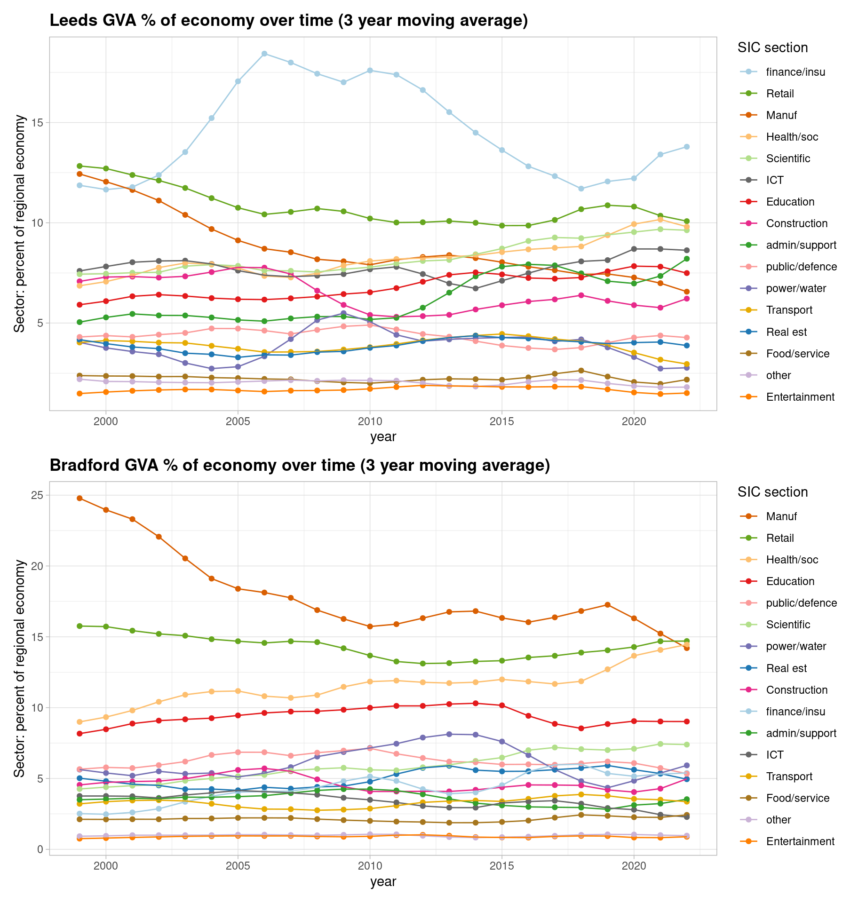
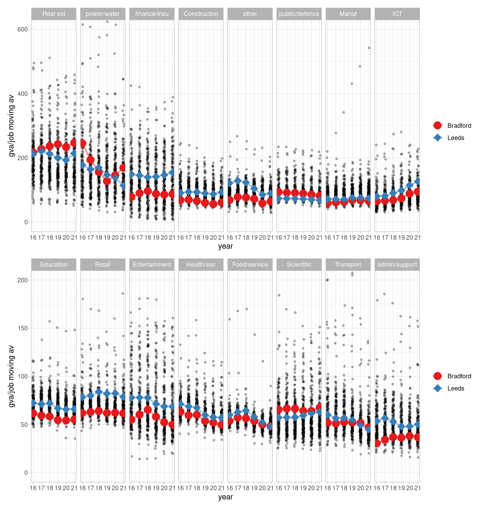
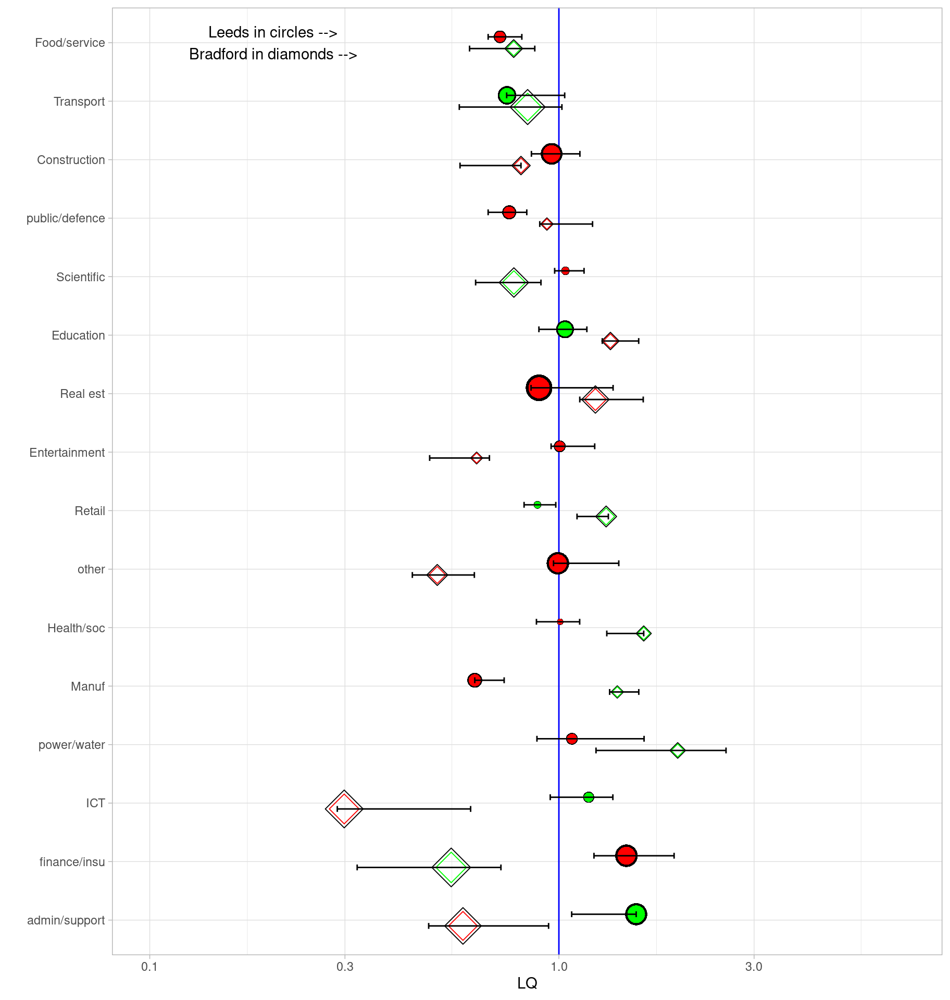
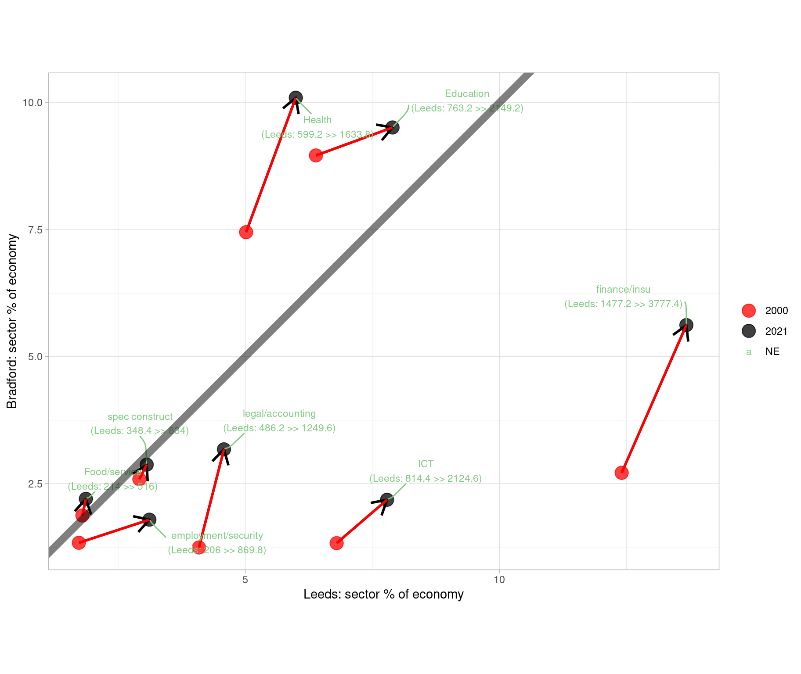
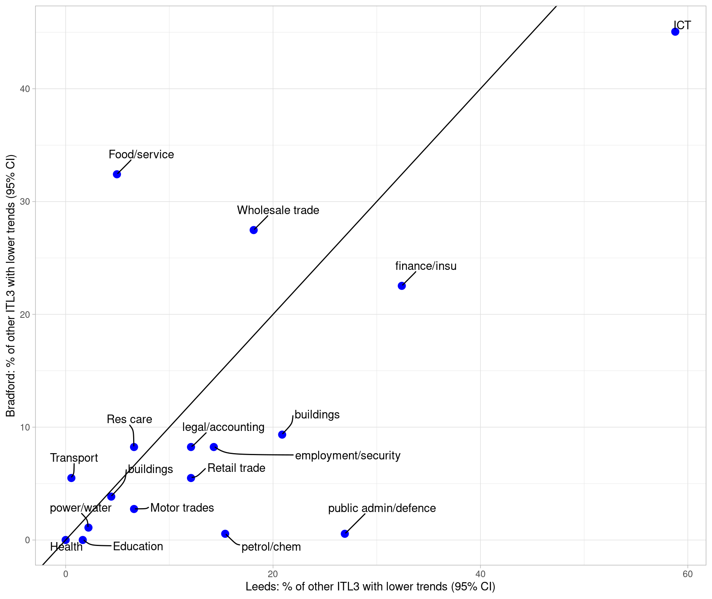

Comparing the economies of Leeds and Bradford using the latest ONS and Companies House data
HEADLINES
This report uses six visualisations of ONS and Companies House data to compare the economies of Leeds and Bradford and put them in a national context. There are links to each of them on the right, or scroll through them below. (Also, hover over figure citations for previews.)
The latest ONS regional GVA data as of April 2025 covers 1998 to 2023. Companies House data (processed with this Companies House Open repo) looks at employment change for firms headquartered in Leeds and Bradford, with accounts submitted between March 2024 to 2025.
Here’s a summary of what the data analysis below shows.
- Figure 1 shows how Leeds’ and Bradford’s economic proportions have changed over time. Aside from the prominence of finance in Leeds, the structural shift away from manufacturing is clear in both places. The next plots dig deeper into the sector picture…
- Figure 2 shows how productivity has changed for both Bradford and Leeds, plotting GVA per full time job for all ITL3 zones, with Leeds and Bradford over them.
- Productivity for both has largely moved in lockstep.
- ICT productivity growth stands out - later plots support that it’s grown significantly more than other places for both.
- Scientific/tech sector productivity has been higher in Bradford, according to this data, and both L+B are higher than the UK average here.
- Figure 3 takes firm level data from Companies house and, for those 10+ employee firms that record employees in this and last year (about 50% of all accounts), examines sector employee percent change. It compares to UK ‘core cities’.
- In the last year, Bradford’s finance firms’ growth stands out strongly.
- ICT growth again is clear, though for Leeds more than Bradford in Companies House firms, as is entertainment.
- Private health/social firms’ growth is present but on the lower end compared to core cities.
- Figure 4 is the same type of plot, but looking this time at micro-firms with fewer than 10 employees in the Companies House data.
- For these much more numerous firms, health growth has been stronger than other places, while food service sector firms are at the higher end.
- Micro firms in finance appear to have been growing faster in Bradford than Leeds, and more than other places.
- Figure 5 examines location quotients for Bradford and Leeds (less than one if a sector is less concentrated than the national average, where e.g. 0.5 is half as concentrated ; more than one if more, where e.g. x2 is twice as concentrated). This measure can change if national proportions shift - so where the plot shows a manufacturing drop in concentration for Leeds and growth in Bradford, this is relative to an overall national drop. (See the plot section for a full key.) Points show LQs for the latest time points; colours show the trend over time for the whole range (1998 to 2023). Bars show the min and max LQ values for the whole time period. Points close together have similar concentrations in both; same colours have been growing/shrinking in the same direction.
- Converging and diverging sectors give indications of which could be growing together, and which could be complementary.
- Scientific and education appear both to be converging in both places, and finance looks to be moving towards the same level.
- Transport services are both growing.
- Other sectors diverge and are quite different - as well as manufacturing, business support services are clearly growing in Leeds while trending towards a smaller part of Bradford’s economy (is Leeds specialising and providing those services to Bradford and other places?)
- Figure 6 looks just at sector proportions (2 digit SIC) putting Leeds and Bradford on opposite axes, for sectors that grew as a proportion of both - to see where their economies have been (structurally) going in the same direction over the full range of the ONS data, and looking just at sectors that have always been more than 1% of each economy. (This removes an issue LQs have - LQs can change due to structural shifts in the UK, not locally.) Lines to the right of the diagonal line are more concentrated in Leeds than Bradford.
- This plot most clearly shows how finance has been developing in the same direction for both over time, as has ICT.
- It can again be seen that education is moving towards a more equal mix in both, while health - increasing for both - has become more concentrated in Bradford.
- Support and legal sectors have grown in importance in both (though the LQ plot shows Bradford has less than the UK average).
- Figure 7 pulls out sectors whose trends have been significantly more positive than other places in the UK (for logged inflation-adjusted GVA values). Again putting Bradford and Leeds on opposite axes, it shows the percentage of other UK ITL3 zones in the UK that had a lower trend over the last ten years (and whose 95% confidence intervals don’t overlap). So while growth could be positive (or negative) everywhere, this shows whether Leeds/Bradford’s rate over time is higher in comparison to those.
- ICT volume output has been growing everywhere in the UK over time, but Leeds and Bradford have grown significantly more (on this measure) than 59% and 45% of other places, respectively.
- The trend for finance and insurance has been significantly higher than 32% / 22% of other places, respectively for Leeds and Bradford.
- Leeds and Bradford have separately had higher significant slopes in different sectors e.g. Bradford food/service slopes higher than 32% of other places, but Leeds much lower at 5%.
1. How has the structure of Leeds and Bradford’s economies changed over time?
2. GVA per job for Leeds and Bradford’s sectors compared to the rest of the UK

4: Same as above from Companies House data, but all firms with fewer than 10 employees
5: Location quotient change for Leeds and Bradford’s broad sectors
Key for location quotient plot (see this post for more):
- Location quotients for sectoral GVA in the selected region - green/red spots are LQ for the latest time point.
- Sectors to the right of the blue line are more concentrated in this region when compared to the national average. (e.g. LQ = 10, it is 10x more concentrated)
- Green circles have been increasing in concentration over time (larger circles increasing the most)
- Red circles have been decreasing in concentration over time (larger circles decreasing the most)
- Black horizontal lines show the min and max of concentration in the data’s history (from 2015 to 2023) (so, often, large green circles will be at the right of this line because sector concentration has been steadily increasing)
- Per sector GVA money amounts and percent of that region’s entire economy are shown on the right.

6. Which sectors grew as a proportion of both Leeds and Bradford, and by how much? Change between 1998 and 2023 (5 yr moving av) in Leeds and Bradford sectors (2 digit SIC)

7. In the last decade (2014 to 2023) which sectors in Leeds and Bradford have increased their output significantly more than other places?
Figure 7 aims to show which sectors (at 2 digit SIC level) have relatively increased more than other places - and that the change is significant (slopes don’t overlap, with 95% CIs). It uses the most recently available GVA data, up to 2023, looking at trends over the last decade.
To get to the points in the plot, the data goes through the following steps:
- Find all trends for each sector and compare Leeds and Bradford to every other ITL3 zone in the UK (for log values of inflation-adjusted GVA).
- Record a ‘yes’ for those pair comparisons where Leeds or Bradford’s slope is significantly higher, and count them.
- Plot what percent of places Leeds/Bradford has these higher slopes.
Note, growth could be positive (or negative) everywhere; the comparison shows whether Leeds/Bradford’s rate over time is higher in comparison to those. So, for example - ICT volume output has been growing everywhere in the UK over time, but Leeds and Bradford have grown significantly more (on this measure) than 59% and 45% of other places, respectively.
